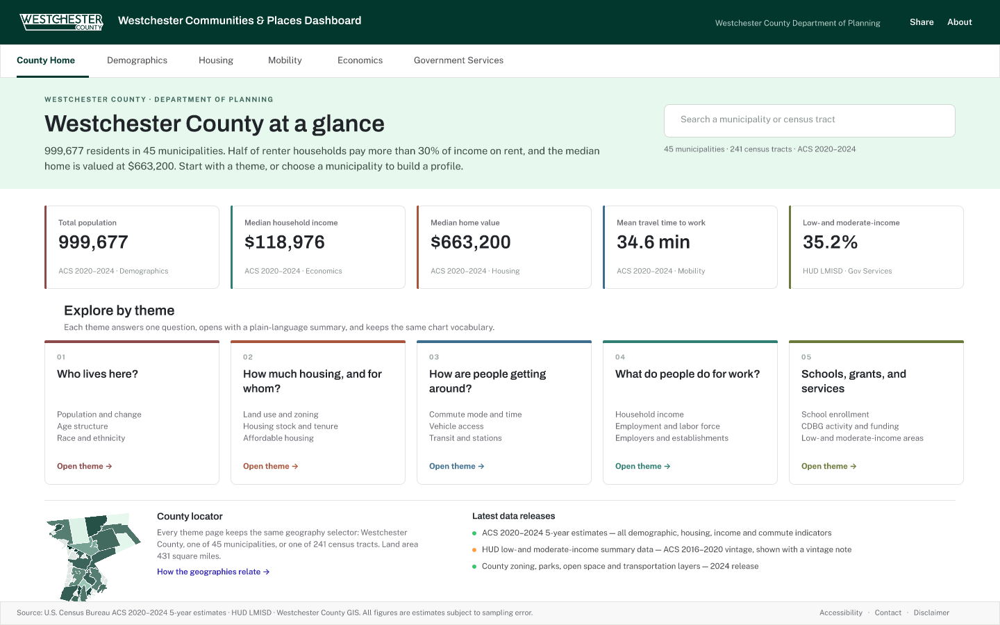
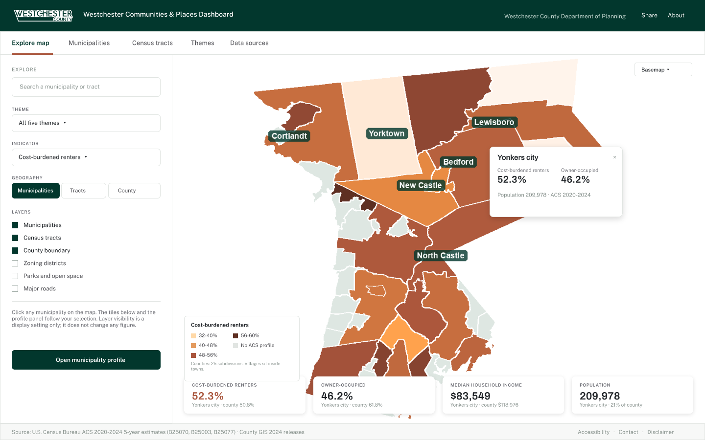

Prototype build · November 2026
Both alternatives are static sites built only from capabilities ArcGIS Experience Builder provides: Header, Tab/Navigation, Indicator, Chart (bar and pie), Map (web map, pop-ups, layer list), Filter/Category Selector, List/Feature Info and Rich text. No 3D, no animation, no client-side editing. Both are branded to Westchester County Planning and carry real County, Census and HUD data.

The reader picks a question ("How much housing, and for whom?") and the page answers it: headline indicators, one comparative chart, a supporting breakdown, then the municipality table. The map is a destination inside a theme.

The reader lands on a map with filters, picks a place, and every panel follows: tiles, pop-up, municipality profile, census-tract detail. The five themes are a filter dimension; geography is the navigation.
| Source | What it supplies | Vintage | Terms |
|---|---|---|---|
| U.S. Census Bureau — ACS 5-year | Population, housing, income, commuting (33 indicators × county / town-city / tract) | 2020–2024 | Public domain |
| U.S. Census Bureau — TIGER/Line | County, county-subdivision, tract and block-group boundaries | 2024 | Public domain |
| Westchester County GIS | Municipal boundaries, zoning, open space, parks, trails, roads, transit, schools, water districts | 2024 release | Public REST services, no explicit licence published — confirm terms with WCGIS before the public launch |
| HUD — LMISD | Low- and moderate-income persons by block group | 2016–2020 | U.S. Government work, public domain |
| NYS Dept. of State — Disadvantaged Communities | Climate Act DAC designations | 2023 designations | Free public use with citation |
Every layer, feature count, source CRS and field dictionary is documented in data/README.md. Where a figure is not available — village-level ACS profiles, NYSED school enrolment, CDBG project polygons — the screens say pending county AGOL rather than showing an invented value.
These pages are the working preview of the two design alternatives drawn in FigCraft. They are a communication device for the County review, not the production dashboard: production runs on County AGOL with the same widgets, the same data and the same screen set. The widget-by-widget mapping, the design deviations and the verification record are in the build README.
Product name, palette and typography follow
design/brand.md: Archivo SemiBold for headings and numerals, Public Sans for body and UI,
header #02372D, accent #A9553C. Fonts are self-hosted (SIL Open Font License).